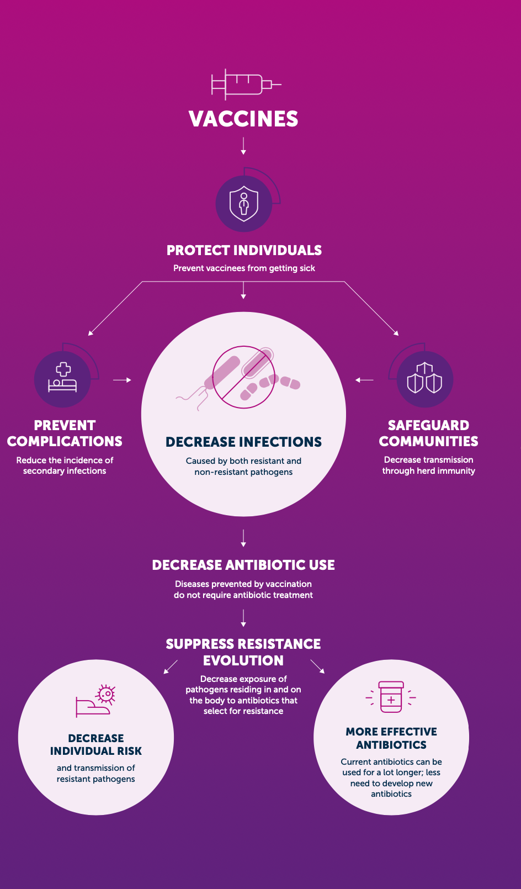
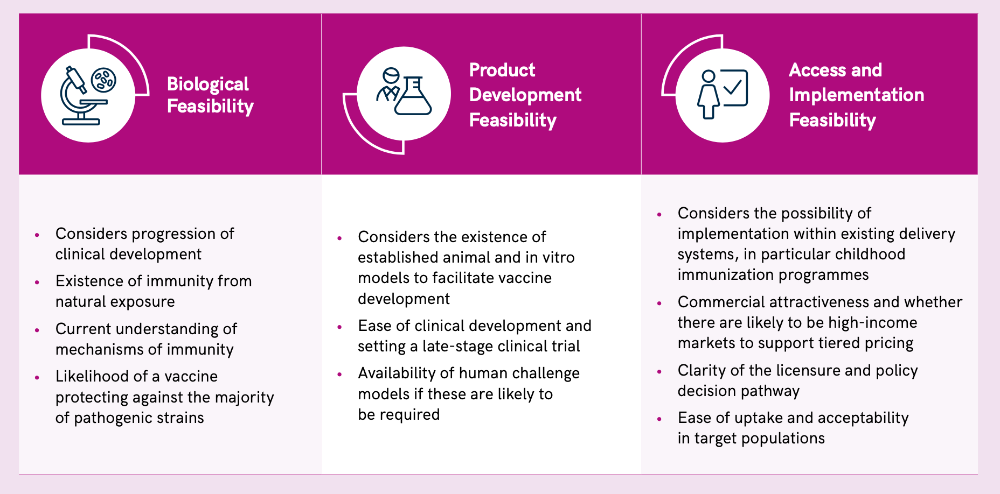
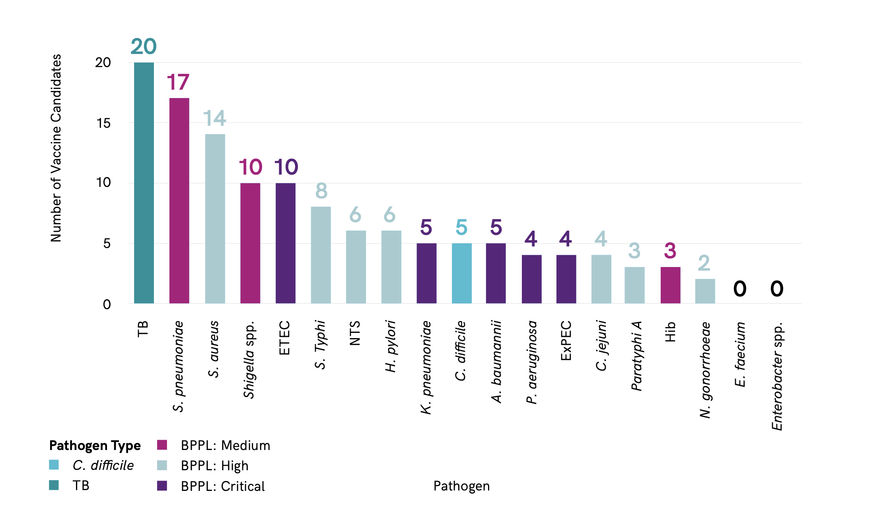
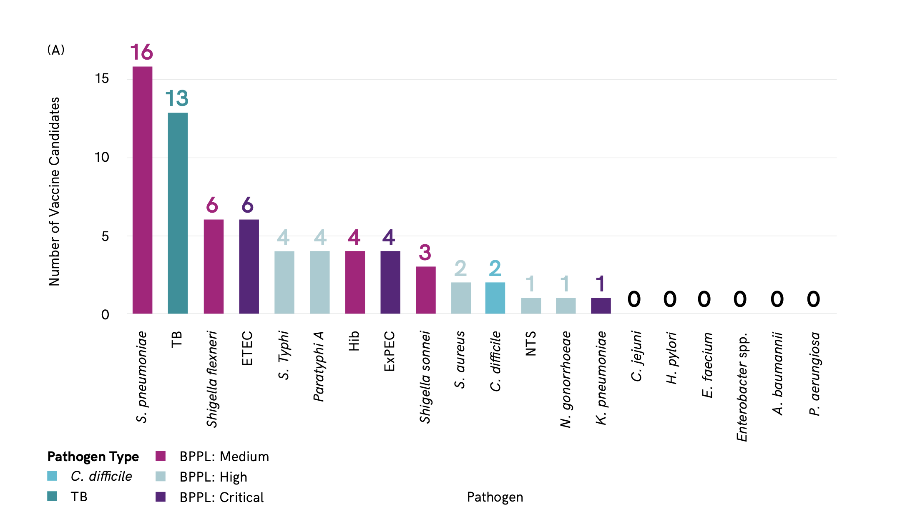
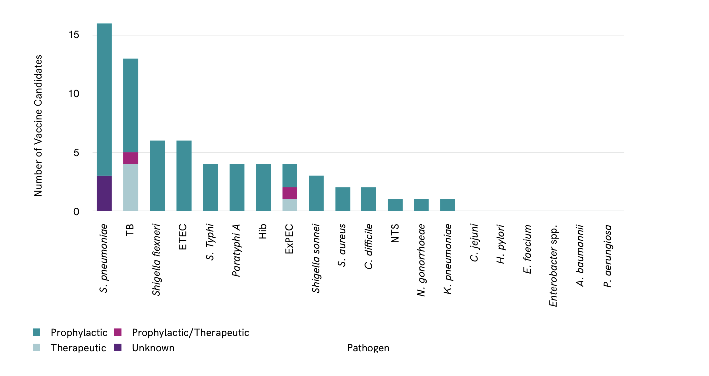
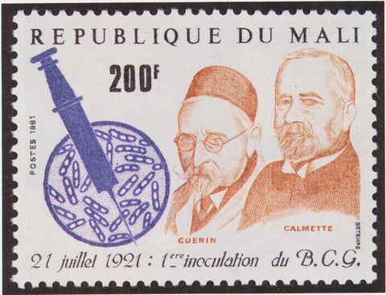
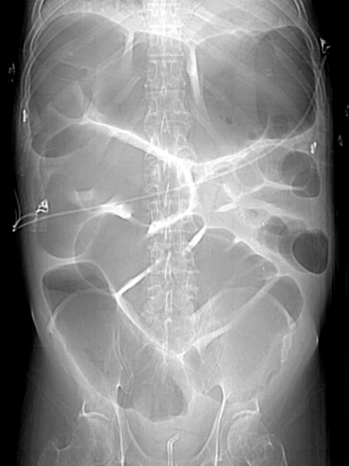
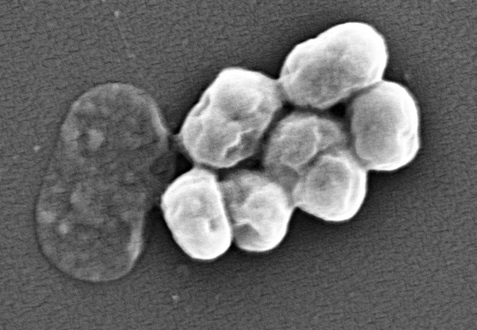

Vaccination and AMR

Background
Vaccines can be highly effective tools in combating antimicrobial resistance. They reduce the incidence of both resistant and susceptible infections, thereby also decreasing antibiotic consumption.
As demonstrated by the recent success of the novel mRNA vaccine platform for COVID-19, developing vaccines against previously challenging targets is possible. Therefore, vaccines can play an important role in controlling AMR in the future.
In December 2022, The WHO recently published Bacterial Vaccines in Clinical and Preclinical Development 2021. This document examines sixty-one vaccine candidates in active clinical development and 94 candidates in confirmed active pre-clinical development were identified.
- The first group (Group A) contains pathogens with vaccines already licensed. These exist against four priority pathogens for AMR: Salmonella enterica ser. Typhi, Streptococcus pneumoniae, Haemophilus influenzae type b (Hib), and Mycobacterium tuberculosis. The effectiveness of the vaccine against S. pneumoniae dramatically reduced mortality in the United States of America (USA) and Europe in comparison to other regions where the vaccine is not widely available and used.
- Current Bacillus Calmette-Guérin (BCG) vaccines against tuberculosis (TB) do not adequately protect against TB and the development of more effective vaccines against TB should be accelerated.
- The second group (Group B) includes pathogens with vaccines that are in late-stage clinical trials with high development feasibility: extraintestinal pathogenic Escherichia coli (ExPEC), Salmonella enterica ser. Para- typhi A, Neisseria gonorrhoeae, and Clostridioides difficile.
- The third group (Group C) contains pathogens with vaccine candidates either in early clinical trials or with moderate to high feasibility of vaccine development: enterotoxigenic E. coli (ETEC), Klebsiella pneumoniae, non-typhoidal Salmonella (NTS), Campylobacter spp., and Shigella spp.
- Vaccines against these pathogens might be available in the long term, however, short term solutions to prevent resistance should focus on other interventions to reduce AMR.
- The fourth group (Group D) contains pathogens with a small number or no vaccine candidates in the pipeline and low vaccine development feasibility: Acinetobacter baumannii, Pseudomonas aeruginosa, Entero- bacter spp., Enterococcus faecium, Staphylococcus aureus, and Helicobacter pylori
- Vaccines against these pathogens are unlikely to be available in the short term, and alternative interventions to prevent AMR caused by these pathogens should be considered. It is even more worrying that the drug development pipeline for A. baumannii and P. aeruginosa also is insufficient to counter this threat.
In this module, we will examine the potential for vaccines to reduce resistance among WHO priority pathogens Table 1. Much of this information is copied and summarized directly from the Bacterial Vaccines in Clinical and Preclinical Development 2021 Report.
| Priority | Pathogens included |
|---|---|
| Critical | Acinetobacter baumannii (Carbapenem-resistant) Pseudomonas aeruginosa (Carbapenem-resistant) Enterbacterales (3rd generation cephalosporin, carbapenem-resistant) |
| High | Enterococcus faecium, vancomycin-resistant Staphylococcus aureus, methicillin-resistant, vancomycin intermediate and resistant Helicobacter pylori, clarithromycin-resistant Campylobacter, fluoroquinolone-resistant Salmonella spp., fluoroquinolone-resistant Neisseria gonorrhoeae, 3rd generation cephalosporin-resistant, fluoroquinolone-resistant |
| Medium | Streptococcus pneumoniae, penicillin-non-susceptible Haemophilus influenzae, ampicillin-resistant Shigella spp., fluoroquinolone-resistant |
How can vaccination reduce the spread of AMR?
- First, vaccination against a bacterial infection can reduce transmission of drug-resistant and susceptible strains directly in vaccinated populations and indirectly, in unvaccinated populations, through herd immunity Figure 1. For example, the introduction of pneumococcal conjugate vaccine (PCV-7) in children in the USA resulted in an 84% reduction in invasive disease caused by the forms of drug-resistant Streptococcus pneumoniae specifically targeted by the vaccine, in children under 2 years of age
- The same vaccination campaign also reduced invasive pneumococcal disease (IPD) in over-65-year-olds by 49%, despite vaccines not being given to this group .
- Second, by reducing the overall burden of infectious diseases, bacterial and viral vaccines reduce antibiotic use, a key driver of resistance
- Rotavirus vaccination is estimated to prevent 13.6 million antibiotic prescriptions every year for children under the age of 5 in LMICs .
- While resistance has emerged to every antibiotic that has been introduced, resistance to bacterial vaccines is less an issue of concern. Consequently, vaccinations are highly attractive as tools for combating AMR.
- Vaccines form part of a sustainable response to AMR, as they prevent infections without selecting for antibiotic resistance.
- Vaccines can also be utilised to rapidly respond to disease outbreaks in conjunction with improvements to water, sanitation and hygiene, and appropriate use of public infection prevention measures, such as mask wearing and social distancing
- Vaccines may be able to act in a way that is synergistic with antibiotics. For example, although the primary selection criteria for serotypes of S. pneumoniae included in PCV was disease burden, the majority of strains selected carried genetic elements conferring drug resistance directly reducing the burden of circulating drug-resistant strains, vaccines may make antibiotics that would otherwise have become ineffective useful again.

What products are currently in development?
The WHO report examined the feasibility of new vaccine candidates for AMR based on biological feasibility, and possibilities for product development and access-implementation Figure 2.

Preclinical vaccine pipeline feasibility
The analysis identified a total of 94 confirmed active preclinical candidates. Of the critical priority pathogens, ETEC has the most candidates in preclinical development (10), followed by A. baumannii (5), ExPEC (4), K. pneumoniae (5) and P. aeruginosa (4) ?@fig-pipeline.

Total number of candidate in preclinical program by pathogen. Total number of candidates in preclinical development by pathogen. Note that some vaccine candidates are double counted here, as they target more than one pathogen. Pathogen type refers to status as defined by the WHO priority pathogens list. ETEC: enterotoxigenic Escherichia coli; ExPEC: extraintestinal pathogenic E. coli; Hib: Haemophilus influenzae type b; NTS: non-typhoidal Salmonella; BPPL: bacterial priority pathogen list; spp.: species; TB: tuberculosis. Figure is from reference [1].
A total of 61 vaccine candidates in active clinical development. S. pneumoniae has the greatest number of vaccine candidates in clinical development (16), closely followed by M. tuberculosis (13) Figure 3. There are no vaccine candidates in clinical development against A. baumannii, Enterobacter spp., Enterococcus faecium, H. pylori or P. aeruginosa.

The majority of vaccine candidates identified are prophylactic Figure 4. Only a few therapeutic vaccines target tuberculosis (TB) and ExPEC. Therapeutic vaccines have the potential to reduce reinfections, for example urinary tract infections (UTI) caused by ExPEC, and reduce associated antibiotic use. Therapeutic vaccines have the advantage that they could be administered to at-risk populations that are already colonized or infected with the pathogen.

Spotlight on specific vaccines
Haemophilus influenzae type b (Hib)
Three vaccines against Hib are in active preclinical development and forty-six vaccines are already licensed against Hib [1]. Indeed, vaccines against Hib have been available since the 1990s and have almost eliminated invasive Hib in children under 5 in developed countries [2]. Vaccines have been shown to reduce the prevalence of certain drug-resistant strains of Hib [3]. Although current Hib vaccines are approximately 70% effective, four vaccines are in active clinical trials, three of which were in or recently completed Phase 3 clinical trials (Table 5). For example, the paediatric hexavalent vaccine Shan 6 (NCT04429295), which was scheduled to complete its Phase 3 trial in November 2021 and has already filed an New Drug Application (NDA). In addition, LBVD, a combined DTP-HepB-IPV-Hib (diphtheria, tetanus, pertussis, hepatitis B, poliomyelitis and Hib) vaccine completed Phase 1 trials in August 2019 (NCT04429295).
Despite the availability of a safe and effective vaccine for Hib, greater uptake and global coverage are needed to combat the increasing incidence of drug-resistant Hib [4,5].
Streptococcus pneumoniae
Seventeen vaccines in preclinical development specifically target S. pneumoniae, all of which are being developed in the private sector[1]. Five of the candidates are conjugate vaccines, while other approaches include multiple antigen presenting system (MAPS), recombinant vaccine, pathogen-agnostic mechanisms, and outer membrane vesicles (OMV) . There is also work on preclinical models to demonstrate that mucosal maternal vaccination with novel pneumococcal vaccines can protect offspring from the establishment of pathogenic pneumococcal infections [6].
Currently, 16 vaccine candidates are in active clinical trials, including multiple pneumococcal conjugate vaccines (PCV), that follow the approach of some licensed pneumococcal vaccines, which mix purified capsular polysaccharide of pneumococcal serotypes conjugated to a carrier protein.
- Four vaccines are in Phase 1 clinical trials, including two 13-valent vaccines, a 15-valent euPCV vaccine, and a protein-based pneumococcal vaccine (PBPV). The last covers 70% of all pneumococcal serotypes and is scheduled for completion in April 2022 (NCT04087460).
- Eight vaccines are in Phase 2 clinical trials, including multiple PCVs with valencies from 11 to 23. A pneumococcal protein vaccine (PPrV) using a recombinant protein method which proved to increase protection over current polysaccharide and conjugate vaccines is also in Phase 2 clinical trials (NCT01446926[7].
- A multiple antigen presenting MAPS vaccine,which showed proof of concept in Phase1 trials (NCT03803202), has now moved to Phase 2. Four vaccines are in Phase 3 clinical trials, all of which range from being 13- to 23-valent vaccines.
The PCV10 and PCV13 vaccines are safe, effective pneumococcal polysaccharide-protein conjugate vaccines that have been available since 2009. Another 10-valent PCV vaccine, (with overlapping serotypes with PCV10 and PCV13) was prequalified by WHO in December 2019 and a 23-valent pneumococcal polysaccharide vaccine (PPV23) is licensed for use in adults.
These vaccines are highly effective against invasive pneumococcal disease (IPD) and provide some protection against pneumonia. Current vaccines against S. pneumoniae have been highly effective in reducing the prevalence of drug-resistant infections.
- Five years after the first PCV was used in the USA, IPD caused by multidrug-resistant (MDR) strains in children under age 2 decreased by 84% and penicillin-resistant IPD in adults over 65 fell by 49% [8].
- In South Africa, the use of PCV was related to an 82% reduction in the rate of penicillin-resistant pneumococcal disease in children, and a 47% reduction in disease caused by penicillin-susceptible strains [9].
- The high cost of vaccines against S. pneumoniae is a significant barrier to uptake and worldwide coverage is approximately 40% of the target population (1-12 months of age) . Although there are more than 100 S. pneumoniae serotypes, most strains responsible for disease are covered by currently available PCVs. Research is now aimed at reducing the cost of manufacture and increasing serotype coverage [7].
Mycobacterium tuberculosis

The first vaccine against M. tuberculosis, the Bacillus Calmette–Guérin (BCG) vaccine, was developed 100 years ago. It is the most widely administered vaccine in the world [1].
BCG provides moderate to good protection against severe forms of TB in infants and young children (averting thousands of paediatric deaths annually). However, the efficacy of BCG is variable in preventing adult forms of disease and wanes over time. Moreover, BCG does not reduce transmission of M. tuberculosis. Hence, the use of BCG in preventing TB in most upper-income countries is limited to at-risk populations. Safe and effective vaccines that prevent TB infection or disease across all age groups are urgently needed to achieve the goals and targets of the WHO End TB Strategy.
Drug-resistant TB threatens TB control globally, with 500 000 out of 10 million total cases resistant to first-line treatment in 2018 alone. Second-line treatment entails high costs, longer duration, a lower success rate and is toxic. Model estimates suggest a vaccine could avert 499 000 deaths due to rifampicin-resistant TB between 2020 and 2035 [11]. There are 13 novel vaccine candidates against TB in active clinical trials; two candidates are in Phase 1, 7 are in Phase 2, and four are in Phase 3, with at least 20 in preclinical development[1].
The vaccines are prophylactic, therapeutic or both Figure 5.
One of the multiple challenges is that the vaccine would need to be administered to adults and adolescents, who are outside the established childhood immunization schedule.
Scientific challenges include the lack of validated, predictive animal models of TB infection and disease, few biomarkers that can act as prospective signatures of the risk of developing TB or as correlates of protection, and an incomplete understanding of the nature of protective immunity to TB . From a developer perspective, vaccine R&D is an expensive process with long timelines. Industry engagement in TB vaccine development is low, owing to the lack of market incentives to invest in a disease that is concentrated in LMICs, and which disproportionately affects the poor [12]. However, a therapeutic vaccine against pulmonary TB is considered biologically feasible [13]. Research is focused on novel adjuvants to improve immunogenicity, decrease the required dose of antigen, ensure targeted delivery and optimize the interaction of the antigen with the immune system [14].
The fight against TB will likely require more than one type of vaccine, working in multiple ways, to prevent the establishment of an initial infection (pre-exposure) or to prevent progression to disease (post-exposure). A vaccine might also serve as an immunotherapeutic agent by shortening TB treatment or reducing the risk of recurrence after treatment completion. The current pipeline of new vaccine candidates has limited antigenic and immunological diversity to deliver on this need.
Clostridium difficile

There are five vaccine candidates against C. difficile in preclinical trials, representing a combination of different approaches that include the MAPS platform, the exome-like bacterial vesicles and the use of Bacillus subtilis spores as a delivery agent.
No vaccines are currently available against C. difficile. However, two candidates are in active clinical trials, both of recombinant vaccines. The GSK2904545A recombinant protein vaccine completed phase 1 in April 2022 (NCT04026009). The PF-06425090 vaccine candidate was fast-tracked by the US FDA in 2014. However, the Phase 3 trial, which recruited 17,500 patients, failed to meet the primary endpoint of preventing C. difficile infections, though it did reduce duration and severity of disease based on secondary endpoints (NCT03090191).
Vaccines may target prevention of recurrence of C. difficile or prevention of first infection, which are very different. Current data from vaccine candidates in clinical development suggest that it may be possible to reduce symptomatic disease, but C. difficile may still persist in the host and be shed (67). An antibody to C. difficile toxin has been successfully developed, suggesting that if a vaccine could deliver local antibodies in the gut, it may be successful [1].
Klebsiella pneumoniae
One unlicensed vaccine candidate against K. pneumoniae is in clinical trials. Five preclinical K. pneumoniae vaccine candidates were identified using different technologies, including semi-synthetic conjugation, MAPS platform, Syntiron's Alloy platform and the inactivated whole cells (Table 27). Phase 1/2 trials were recently initiated (NCT04959344) (Table 28) to assess the tetravalent bioconjugated vaccine candidate, KlebV4, with and without the AS03 adjuvant. Another vaccine against K. pneumoniae – MV140 (Uromune), a poorly characterized vaccine comprising heat-killed bacteria – is in late-stage clinical trials (Phase 3: NCT02543827; Phase 2: NCT04096820). Uromune was excluded from this analysis as it has been licensed in Spain since 2010. Moreover, Uromune was recommended in the 2019 European Association of Urology guidelines as immunoactive prophylaxis to reduce recurrent UTI, and retrospective studies suggest it may reduce recurrent UTI by up to 90% compared with antibiotic prophylaxis [16].
K. pneumoniae has a high propensity to acquire resistance genes and spreads easily, in comparison with other Enterobacterales. This may be an argument for considering vaccination against certain strains. A capsular polysaccharide vaccine was developed three decades ago but failed in human trials [17]. Four of the 12 O serotypes that exist for K. pneumoniae would encompass 80% of clinical strains.
K. pneumoniae has been associated with a high burden of neonatal sepsis in low-income countries. Clinical trials involving neonates are challenging, and commercial attractiveness is limited. In HICs, K. pneumoniae infections are most often hospital acquired. The lack of a clearly defined target population makes recruitment for clinical trials and the cost-effectiveness case for a vaccine challenging.
Acinetobacter baumannii

While no vaccines are in clinical development against A. baumannii, five vaccine candidates are in preclinical development. Of these, two are inactivated whole cell vaccine candidates, one of which additionally targets P. aeruginosa and K. pneumoniae, and one is a conjugate vaccine which additionally targets Streptococcus agalactiae.
Multiple candidates have been characterized in preclinical studies based on recombinant proteins, inactivated/attenuated whole cells and surface polysaccharides that have not made it to the clinical stage. The lack of vaccines against A. baumannii in clinical development might be explained by the biological complexities, which makes it scientifically challenging to arrive at a sound concept for an A. baumannii vaccine. In addition, there are number of challenges along the pathway to clinical development. Even if one of the candidates in preclinical development made it to the clinical stages of development, large efficacy trials would be required due to low disease prevalence in vulnerable populations.
The target population includes critically ill patients with multiple comorbidities and/or a compromised immune response, and who are often in intensive care. All of this makes it hard to recruit subjects for such trials and complicates the establishment of appropriate efficacy end points [18]. In addition, there is currently no precedent for the routine use of vaccines to prevent hospital-acquired infections in high-risk populations. It is unclear when such a vaccine would need to be administered to be effective if a patient were hospitalized.